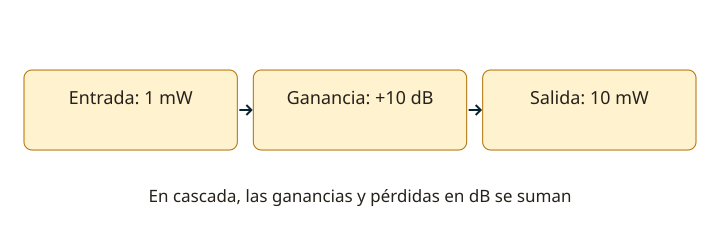

Lección 7 de 16
Amplificadores, ganancia y realimentación
Relaciona polarización, ganancia, respuesta y distorsión para comprender una etapa de audio o radiofrecuencia.
La energía viene de la alimentación
Un amplificador controla la energía de una fuente mediante una señal. La ganancia de tensión Av = Vsal/Vent, de corriente Ai = Isal/Ient y de potencia Ap = Psal/Pent son diferentes. Usa magnitudes comparables y condiciones de carga definidas. Si una etapa se satura o recorta, deja de entregar una copia proporcional. No confundas la ganancia del transistor aislado con la ganancia de todo el circuito cargado.
Ganancia expresada en decibelios
Para potencia, GdB = 10 log10(Psal/Pent). Para tensiones con la misma impedancia de referencia, GdB = 20 log10(Vsal/Vent). Si cambian las impedancias, calcula primero las potencias. Las ganancias y pérdidas de etapas en cascada se suman en dB y se multiplican como razones lineales. 3 dB son aproximadamente el doble de potencia; 10 dB son diez veces. dBm representa potencia absoluta referida a 1 mW.

Polarización y clases
El punto Q permite el recorrido de la señal sin cruzar regiones inadecuadas. En clase A hay conducción durante todo el ciclo; B conduce aproximadamente medio ciclo por dispositivo; AB, algo más de medio; C, menos de medio. La eficiencia y linealidad cambian. Una señal de envolvente variable, como SSB, requiere una cadena suficientemente lineal. Un circuito tanque puede reconstruir una componente sinusoidal a partir de pulsos, pero no vuelve lineal cualquier amplificador para cualquier modulación.
Acoplamientos y respuesta
El acoplamiento RC bloquea continua y transmite la señal dentro de una banda; el transformador puede adaptar impedancias; el acoplamiento directo transmite también componentes muy lentas y cambios de continua. Las capacidades, inductancias y cargas fijan límites de frecuencia. Amplificadores de RF y frecuencia intermedia pueden ser sintonizados; una etapa de audio necesita la banda de la voz y una de video, una banda mayor. El ancho adecuado depende de la función, no de que una etapa sea “mejor”.
Push-pull, realimentación y estabilidad
Un push-pull combina dos ramas excitadas con la relación de fase necesaria; puede reducir ciertos productos de distorsión y mejorar eficiencia. La realimentación negativa reduce la ganancia y puede mejorar estabilidad y linealidad. Si el lazo acumula fase inapropiada, una realimentación que se pretendía negativa puede producir oscilación. El desacoplamiento de alimentación, masas, blindaje y disposición física importan tanto como los valores del esquema.
Diseñar y comprobar una etapa
Define frecuencia, carga, potencia, ganancia y alimentación; elige un dispositivo con margen de tensión, corriente y temperatura. Calcula el punto de operación y la disipación, y revisa excursión disponible. Para una carga resistiva y sinusoide, P = Vrms²/R. Mide armónicos, recorte y calentamiento sin exceder los límites del instrumento. Una lectura alta en el vatímetro no demuestra una emisión limpia: la energía puede incluir armónicos o intermodulación.
Resuelve paso a paso
Etapas en cascada
Una etapa de +10 dB seguida de un cable de −3 dB y otra etapa de +6 dB da +13 dB: una razón de potencia de aproximadamente 20. No se suman las razones lineales.
Potencia desde una sinusoide
20 Vpp sobre 50 Ω son 10 V de pico y 7,07 V eficaces. P = 7,07²/50 ≈ 1 W. Para otra forma de onda la conversión puede cambiar.
Comprueba lo aprendido: ¿Duplicar la tensión sobre la misma resistencia duplica la potencia?
No. P = V²/R: la potencia se multiplica por cuatro, aproximadamente +6 dB.
Preguntas oficiales de este tema
Selecciona una alternativa y pulsa «Comprobar respuesta». Si fallas, podrás ver la respuesta correcta para seguir aprendiendo. Las preguntas con incidencias documentales se muestran solo para consulta y no se califican.
Continúa tu recorrido
Fuentes de estudio: programas técnicos y banco SUBTEL, apéndices A–E, versión 06/12/2020, y sus solucionarios oficiales. Reglamentación: Decreto 523, versión 21/06/2013; evaluación: Resolución Exenta 2620/2023. Revisión documental: 11/11/2026. Explicaciones, cálculos y esquemas didácticos de RUFCOM. Consultar documentos oficiales.